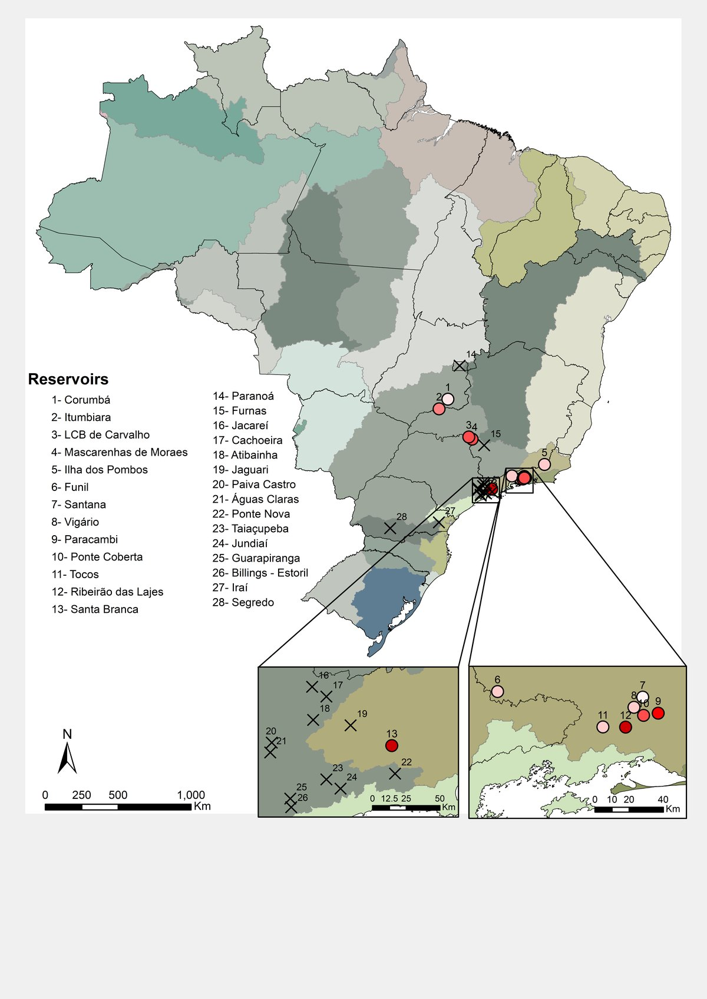
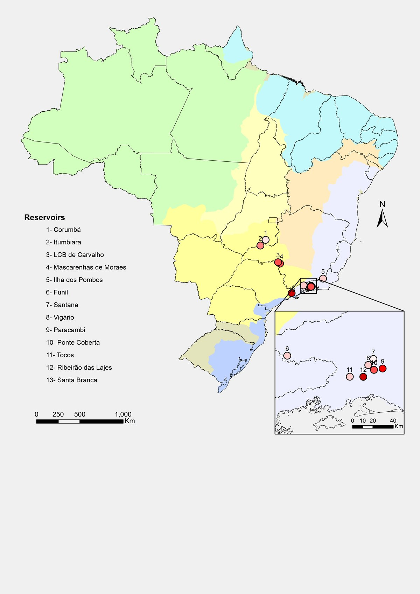
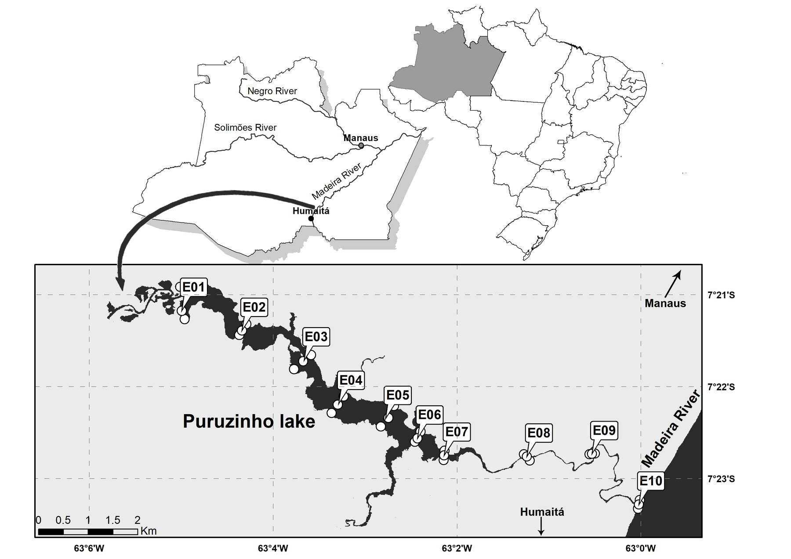

Mapas de localização: reservatórios do país inteiro e um lago amazônico
Mapas feitos sob demanda para dois estudos de ecologia aquática, do recorte por ecorregião e por bacia ao detalhe dos pontos de coleta.
- Entrega
- Mapas de localização sob demanda
- Período
- 2018
- Meu papel
- Cartografia: base, recortes, símbolos e layout
- Ferramentas
- ArcMap · Adobe Illustrator



À esquerda, 28 reservatórios sobre ecorregiões de água doce; à direita, 13 deles sobre bacias hidrográficas. Os quadros ampliam o Sudeste, onde os pontos se sobrepõem na escala do país.
Duas escalas no mesmo layout: a posição no Amazonas e no Brasil, e o lago Puruzinho, perto de Humaitá, com os dez pontos de coleta, de E01 a E10, até o rio Madeira.
O pedido
Dois projetos paralelos de ecologia aquática precisavam de mapas de localização claros: dezenas de reservatórios espalhados pelo país, com agrupamentos densos no Sudeste, e uma série de pontos de coleta ao longo de um lago estreito na Amazônia.
A solução
- Reservatórios numerados, com a lista na legenda, sobre ecorregiões de água doce e sobre bacias hidrográficas.
- Quadros de detalhe onde os pontos se sobrepõem na escala nacional.
- Para o lago Puruzinho, um mapa de situação no Amazonas e no Brasil ligado ao detalhe do lago, com os pontos rotulados e a escala gráfica.
- Base e símbolos no ArcMap, com acabamento do layout no Illustrator.